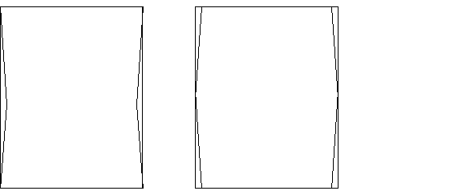
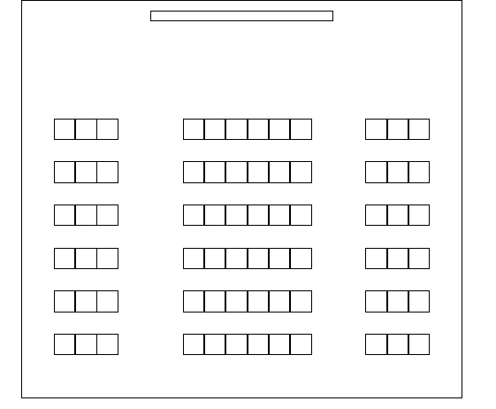

大學圖書館 第一卷第四期（86.10）
圖書館大團體視聽室的規畫
與設計原則之探討
朱則剛
Clarence Tsa-kang Chu國立台灣師範大學視聽教育館研究員
[
摘 要]本文主要目的在於探討圖書館在規劃設計大團體視聽室時，需要注意的一些規劃原則。包括選擇場地時，所需要考慮的一些場地形狀比例與視、聽效果有關的因素之討論。在規劃與設計時，有關銀幕位置、大小的需求以及觀賞座位的安排原則。以及場地裝潢在聲響效果如吸音、反射、擴散與隔音等方面的處理原則，與控制室與設備上的規劃原則等。
[Abstract]
The purpose of this paper is to introduce and discuss issues and principles concerning planning and design of large group AV viewing room or auditorium in libraries. Issues such as relationship between room shape, size, ratio (length: width: height) and acoustic as well as visual effect are discussed. Principle concerning screen and seat arrangement and interior acoustic treatments are introduced, together with discussions on design principles for control room, equipment configuration, air-condition system and other logistics.
關
鍵 詞 ：圖書館；團體視聽室；聲響效果處理Keywords
：Library; AV viewing room; Acoustic treatment
壹、前言
在邁向多媒體時代的今日，許多的圖書館均致力於提昇其視聽服務的品質，以滿足讀者在資訊、文化、教育、以及休閒上的需求。近五年前後，隨著視聽出版業的蓬勃發展，各級圖書館在視聽服務上均有相當長足的進展。其中成效最為顯著的便是包括文化中心圖書館在內的各級公共圖書館。有些較具規模且上軌道的鄉鎮圖書館，也漸次的開展了視聽服務。
圖書館視聽服務的場所除了視聽資料的存置與流通空間外，最重要的便是閱聽視聽資料的空間或場所。一般而言，此等資料閱聽場所依其空間的大小以及使用人數的多寡，可分為個人閱聽區、小團體視聽室（區）、及大團體視聽室等。
個人閱聽區多為開放的空間，其中規畫佈置許多可供一人或二人使用的視聽卡座，讓讀者個別使用，或讓親子、朋友共同閱聽視聽資料。此種個人閱聽空間是圖書館提供視聽服務最主要與必備的場所，如館內空間充足，則另可考慮設小團體視聽室（區）或大團體視聽室。
小團體視聽室為一種有隔音設備的獨立小型空間，可供三至五人或五至十人同時使用。就中、大型的圖書館而言，如空間許可，不妨考慮設置。如空間不夠無法設立單獨隔間的小團體視聽室，可考慮在個人閱聽區內，或臨近的空間中，規劃出供少數讀者共同觀看與聆聽視聽資料的區域，讓讀者頭戴耳機聆聽與觀看。
整體而言，小團體視聽區或小團體視聽室在需求上，是較次要的空間。以規模較小的圖書館，如鄉鎮圖書館而言，由於整體空間較為不足，設置小團體視聽室並不很合適，如果使用的人不多，設置小團體視聽室對此類圖書館在空間利用上並不經濟。
大團體視聽室為可容納五十人以上的多功能空間，視所服務對象的多寡而定，有些圖書館的大團體視聽室可能需要容納一百人的較大場所，但是一般說來，中、小規模的圖書館能有可容納五十人左右的大團體視聽室就已足夠。此等空間通常是圖書館在規畫個別閱聽空間之外，優先規畫的視聽服務場所。
圖書館在規畫大團體視聽室時，常因對於應注意的事項瞭解不夠清楚，導致或許全盤受制於廠商、或在設計上忽略了許多重要的因素，或未能充份與廠商溝通，而使所規畫設計的場所不儘完善。本文討論的重心，即以大團體視聽室的規畫與設計需注意的事項為主體，期能對圖書館在規畫設計大團體視聽室上有所助益。
貳、空間的選擇與規畫
如前所述，大團體視聽室通常為一多功能空間，此乃因為圖書館的視聽服務是以視聽資料的個別閱聽為主，團體的視聽活動多僅為每週一至三、五次的間歇性活動，如將該等空間拘限於視聽活動用，在空間利用上頗不經濟。但是，如果公共圖書館有足夠的空間，則不妨考慮將原有的小型演講廳或其他合宜的場所，改設為多功能的大團體視聽室，除了作為視聽室外，也保持原有的功能，仍可作為演講廳或研習場所之用。
一般而言，大團體視聽室的空間選擇與規畫，要同時考慮到觀看與聆聽效果的需求。就觀看的效果而言，方形、近方形的長方形、或扇形的場地均宜。但就聆聽的效果而言，接近正方形的場地不很適宜。有關空間形狀與比例及觀看及聆聽效果間的關係分別討論於下。
(
一) 空間形狀與比例的觀看因素空間與觀看之間的關係，主要的考量在於該空間的形狀及比例，是否能在位置的安排上，可以讓每一個觀眾均能很舒適及清楚的看到銀幕上的畫面。坐於太遠的觀眾會看不清楚畫面，而座位太側端的位置，視線也不佳。空間的形狀與比例要讓所有人均有不錯的視野，也要有足夠的高度，來做階梯式的處理，使前排的人不會擋到後排的視野。
就觀看位置的安排而言，最理想的便是以銀幕（或舞台、講台）為核心的放射狀扇形安排。也因為如此，純就觀看的效果來考量，最理想的空間應是扇形的場地。但是這樣的場地，在其他功能的安排以及與其他臨近場所的空間配置上較難調節。對圖書館而言，較難以規畫。
一般可用的現成場所多為長方形或近長方形的方形，就觀看效果的需求而言，要注意避免長、寬比例過於懸殊的長方形場地，其座位的安排會很困難。在一般的情形下，就觀看場地實際應用的綜合考量而言，正方形或近方形的長方形場地尚屬很適宜的場所，可以在此等場地內，以前述的扇形形狀，來安排座位。重要的是場地的挑高要夠，才能做階梯式的處理。
要注意的是如為長方形的場地，銀幕最好置於場地長端的前方，短端的中央之位置，如此在空間利用上才較為經濟。除非空間的挑高不足，無法做足夠排數的階梯式處理，才會考慮將銀幕置於長方型短端的前方，長端的中央之位置，以減少座位的排數。此時要特別注意選擇適當的銀幕，以免因為銀幕有效反射角度過小，而使坐於兩端的觀眾無法觀看。
(
二) 空間形狀與比例的聆聽因素我們在任何空間內所聽到的聲音，均是直接音與來自四面八方之反射音的組合，而聆聽效果的好壞，在很大程度上取決於此二類聲音的適當比例。一般的視聽室或音響聆聽室均是一個封閉的空間，空間的四面八方均有障礙物，由喇叭所播放的聲音會由側牆、背牆、後牆、天花板與地板反射。當反射音過強時，喇叭所播放的直接音相對的消弱，會使得聲音較模糊，聲音的定位不清。而空間形狀與比例，會影響到音波在空間中的擴散，空間中「殘響」
(reverberation) 的長度，音壓是否平均，以及能會影響聆聽效果的「駐波」的產生等多方面。所謂殘響，是指聲音停止後仍殘存的時間長短。殘響的長短受到空間的大小、裝璜等多種因素的影響。其計算是以
RT60為評量的單位，代表一個聲音的音壓自發聲停止起，至衰減為原先約百萬分之一 (-60dB) 的強度，所花費的時間 ( 註 1)。殘響受到空間的大小，空間的牆壁與物體（如傢俱）的吸音能力等諸多因素之影響。一般而言，大而空曠的密閉空間，如教堂之殘響通常很長，可能長達
6、7秒鐘。而小的密閉錄音室中的殘響通常較短，可能短至0.1秒。在音響空間中，音波碰到四面的牆壁會反射，也會由天花板與地板反射，駐波代表受到音響空間內聲音在牆壁間反射的影響，使某些特定頻率的聲音強化的一種現象。這種現象有些像是在盆中受外力影響向外擴散的水波，產生漣漪，一波波外推，當水波碰到盆邊會反向回推，如此一來一回交錯的水波，在某些點由於波峰相互重疊，而形成了加成作用，而在另一些點，則由於波峰與波谷重疊，而產生相消作用。這時就會看到有幾圈的水波像是靜止的停留在原位置，到其他移動的水波完全消失之後，最後才會消失，這幾圈看似靜止而特別突出的水波便是駐波。就聆聽室而言，類似的情形也會發生，這時喇叭便是振波的來源，聆聽室的地板、牆壁、天花板便是水盆的邊緣，而聲波音壓的極高點與極低點便好似水波的波峰與波谷，因此直接音與折回的反射音相交錯時，同樣的會產生駐波，而在聆聽室中產生靜止且隨位置而變化的音壓變化（
註 2）。共振
(resonance)在一般的應用上，是指一個機械或電子系統，受到外在力量的影響，而以特定頻率振動，並在該影響力消失之後仍持續振動的一種傾向 (註 3)。鈴或鐘在敲擊力（外在力量）消失後，仍會持續的發出特定頻率的聲音很長一段時間，即是共振現象最為明顯的例子。其體積大小不同，共振的頻率也不相同。共振的概念運用到音響空間的設計上，則與駐波有相當密切的關係。當駐波在音響空間中發生時，該空間中的空氣便會發生共振，而產生加強的作用。此時該駐波的音波頻率即稱為共振頻率（
註 4），而「共振模式」(resonance mode) 一詞，則代表音響聆聽空間中，整體駐波的共振頻率頻率分配情形。 每一個聆聽的空間都會有殘響與駐波的現象存在，以及其特定的共振模式。殘響如果過長，則主音與殘響同時存在，會使得聲音較混濁不易分辨，殘響過短，則聲音聽起來過於乾澀不飽滿。駐波若是均勻的分佈於整個頻譜的話，聲音會聽起來舒適好聽，但若是集中於特定頻段，會使得某些頻率的聲音過於被強調，而聲音也會較為混濁並且失真。
基本上，聆聽空間的形狀最好是扇形、圓形〈接近圓形的多角形〉或是對稱的不規則形狀。就聆聽效果、聲音的擴散等方面而言，圓形、扇形或不規則的形狀的場所常會產生最佳的音響效果。這也是許多著名的歌劇院、演奏廳是設計成這類形狀的主要原因。這類形狀的場所音響較佳的主要原因，是互相平行的牆面很容易產生駐波，而使得某些頻率的聲音過於被強調，也會有部份頻率的聲音被抵銷，而影響整體的聆聽效果。採行圓形、扇形、五角形或六角形等特殊形狀，便是儘量避免駐波的產生。舉例而言，柏林的愛樂廳便是設計成對稱的五角形的，音響效果優良。要特別注意的是，雖然多角形的空間較能避免駐波的產生，但是所有的音響聆聽空間，均應是左右對稱的設計。
扇形或其他特殊形狀的場所雖然音響效果較佳，但在空間運用上常常不易規畫與不夠經濟，且必須在屋舍建築時，便予以做該等設計。圖書館的視聽室能做該等設計固然很好，但是一般的情形多是就現成的空間，做必要的修改利用。而一般的空間多為正方形、或長方形的場所。如為長方形，專家們提出了許多不同的理想空間比例，其中最著名的是所謂長、寬、高為
1：1.6：2.5的「黃金比例」（註 5）。另外也有1：1.6：2.33的高：寬：深比例建議（註 6），或是2.5：4：6 （註 7）、1：1.62：2.62 、3：5：7、以及 1：1.6：2.3（註 8）等多種有關長、寬、與高度比例的建議。聆聽空間的比例對音響效果的影響，主要在於長、寬、高三對平行牆面，所產生的駐波所形成該空間整體的共振模式。基本上，聆聽場所設計上最忌諱的是長、寬、高成整數比（例如
1：1：1或1：2：4）的空間。由於平行的牆面會產生駐波，因此一個空間中通常會有由三個平形牆面（長、寬、高）分別所產生的駐波。長、寬、高成整數比的空間，尤其是比例過接近的空間，會使三組平行牆面駐波的聲波相互重疊，很容易使得某些頻率的聲音過於被強調，也會有部份頻率的聲音被抵銷，甚或在聆聽上會有令人不舒適或易產生聆聽疲勞的情形。前述的黃金比例空間，以及其他的一些長、寬、高比例，會使駐波很平均的分配於頻譜中，形成較為分佈良好的共振模式，使得聲音聽起來較為輕鬆、和諧。在一個長方形的空間內，如要盡量消除駐波的產生，便是使牆面不平行。一般而言，場地前後的前面是保持平行的，因此最常見的作法便是將左右的牆面，以及天花板與地板，做適當的處理，使其相互不平行。此類的處理方式，基本上就是將原先的長方形或方形的空間，藉由裝璜，變化成對稱的多邊形空間。常見的作法，是將左右二邊的牆面予以裝潢，處理成中央稍微凸出或凹陷的對稱不平行狀（參見圖一），以及將天花板與地板處理成相互不平行的情形。左右牆面中央凸出的處理
左右牆面中央凹入的處理
左右牆面中央凸出的處理 左右牆面中央凹入的處理
圖一
牆面對稱的不平行處理方式
參、建築裝璜上的音效處理
團體視聽室的地板、天花板、牆面與門板等，除了需採用特殊的設計以及選擇適當的建材做必要的隔音處理外，並應採適切的材質與表面處理，其目的除了做必要的吸音，藉以降低迴響、隔絕聲音與降低室內噪音外，並控制與適切的反射聲音，以使聲音做必要的擴散，以提昇音響效果。
如前所述，我們在任何空間內所聽到的聲音，均是直接音與來自四面八方之反射音的組合，而聆聽效果的好壞，在很大程度上也取決於此二類聲音的適當比例。在一個重播聲音的場所，包括音響聆聽空間，或視聽閱聽空間，聲音的播放是透過置於固定位置的喇叭，而人們所聽到的實際包括喇叭所傳送出來的主要音，以及經由側牆、地板、屋頂、甚至背牆所傳送來的一次、二次、三次、甚至更多次的反射音的混合。因此視聽室或音響聆聽室在建築裝璜上的音效處理，除了應該有適當的隔音處理，以免干擾到其他的場所之外，便是將牆面做適當的吸音
(absorption)、反射(reflection) 與擴散（diffusion；又稱衍射）處理：(
一) 吸音所謂吸音，是一種聲音的能量消耗的現象，指音波在材料中的振動與磨擦，而消耗掉某些頻率音波能量的方式（
註9）。不同材質的物體對於不同頻率音波的反射與吸收能力不同，一些常見的吸音材料，請參見表一（註 10），由表中可以看出大部份的吸音材料多只能吸收中、高頻中的某一小範圍的音波。表一、主要吸聲材料的種類
| 多孔材料 |
碳棉、玻璃棉、泡沫塑膠、毛毯 |
本身具有良好的中、高頻吸收能力，背後留有空氣層時還能吸收低頻 |
|
板狀材料 |
膠合板、石棉水泥板、石膏板、硬質纖維板 |
吸收低頻比較有效
|
|
穿孔板 |
穿孔膠合板、穿孔石棉水泥板、穿孔石膏板、穿孔金屬板 |
一般吸收中頻，與多孔材料結合使用時，吸收中高頻，背後留大空腔還能吸收低頻 |
|
成型天花吸聲板 |
碳棉吸聲板、玻璃棉吸聲板、軟質纖維板 |
視板的質地而定，密實不透風的板的吸聲特性與硬質材料板相同，透氣的則與多孔材料相同 |
|
膜狀材料 |
塑料薄膜、帆布、人造革 |
視空氣層的厚薄而吸收中頻 |
|
柔性材料 |
海棉、乳膠塊 |
內部氣泡不連通，與多孔材料不同，主要靠共振選擇性吸收中頻 |
（
註 11） 吸音處理即是選擇適當材質的裝璜、建材與傢俱，來吸收音波的能量，以消弱過強的反射音。包括牆壁、天花板、地面的處理，以及傢俱材質的選擇等。
(
二) 反射音波的反射與光波類似，入射角與反射角是相同的，因此某一方向來的音波，經過平滑的表面之反射也是定向的。反射處理的目的是讓聲音能均勻的傳達到場地的每一個角落，產生平均的音壓。其方法是利用較不吸音的材料以幾何形狀的特性，如半圓柱，作為聲音的鏡面，將射來的音波以相等的角度朝向另一方向反射出去（
註 12）。一般場所最常做的基本的反射處理，是牆壁的牆角處與場地前端的天花板處。天花板處加裝反射裝置是聲音反射至後排的觀（聽）眾，而牆角的反射處理則有減低駐波聚集的功能。(
三) 擴散 當反射音過強時，可以用吸音的方法來處理，但是反射音過於集中於朝向某一個方向時，最佳的處理方法便是做適當的擴散處理。擴散的主要功能是消弱反射音的方向性，使反射音均勻的擴散至場地中的每一個角落。如前所述，音波與光波一樣，照射在平滑表面時，其入射角與反射角相同，因此，要使反射音擴散，一般而言，所採用的基本方法便是使牆面成凹凸不平的狀態。
為了達到最佳的擴散效果，有些廠商發展出「二次餘數擴散板」
(Quadratic Residual Diffuser)，以木板或其他材質，製成由特定比例深度不同的凹槽所組成的擴散板，可將來自任何方向的音波打碎，使反射波均勻的以180度向各方向擴散（註 13）。此類擴散板雖然效果甚佳，但多為配合家庭聆聽的小型空間之需求而設計，且費用不低，對圖書館視聽室的需求而言，不很經濟實用。 一般而言，在音響聆聽或視聽觀賞的空間中，反射最強的是兩面的側牆。這兩面側牆的處理，取決了整體音響效果重播的很重要因素。因此，這兩面側牆除了要如前面所討論的採行對稱的不平行設計，以免因為二面側牆的平行而造成駐波的產生。另外，為了擴散聲音，二面側牆做適當的擴散處理也是相當必要的。
(
四) 隔音所謂隔音，便是將視聽室與其鄰近的空間，在聲音的傳送上予以隔離，以免視聽室的使用影響到館內其他讀者的閱讀或閱聽視聽資料。厚實的牆壁是良好隔音的基礎，但是兩層較薄而中間間隔有空氣夾層，或中間填充有吸音材質的牆壁，即便整體的厚度不很厚，亦可達到不錯的隔音效果。對於門的處理原則上也相同，除了應該使用較為厚實的門之外，也可將出入口的門設計成二進式〈二道門式〉，一來隔離聲音，二來可以隔離外面的光線。
肆、銀幕及觀賞位置的規畫
大團體視聽室通常運用大銀幕投影電視播放錄影節目，在選擇大銀幕投影電視等設備，以及規劃與安排觀賞位置之前，應先行考慮所需的銀幕尺寸。銀幕的尺寸通常以場地大小為設計的參考，一般長方形的場地可用以下的公式計算﹕
場地長度（縱深）
銀幕尺寸（長度）
基本上，放映畫面的合宜觀賞距離為銀幕長度（高度）的二至六倍間。場地座位的安排應以此範圍做為標準，太近或太遠均不理想。這也是前面強調團體視聽閱聽場所以方形或長方形場地為宜，而應將銀幕置於場地長端的前方，短端中央的位置之原因。
簡言之，銀幕太大或太小均不適宜。銀幕太小，觀眾觀看很耗費眼力，而銀幕太大，不僅對觀眾會產生過大的壓力，且是一種浪費。由於場地的大小通常是固定的，因此在規畫時通常均是以場地長度（最遠的合宜觀看距離）為基準，除以六即可算出所需銀幕的尺寸（長度）。
一般而言，銀幕的規畫多以正方形銀幕，或長﹕寬為
2﹕3的近方形銀幕比例為基準。有些場地不採方形或近方形的銀幕，而特別設計成寬銀幕的方式，如以銀幕寬度計算，無法有一固定的標準，因此以長度為銀幕尺寸計算標準，較為精確。要注意的是此等計算方式與廠商標示電視影像（銀幕或螢光幕）尺寸的標準不同，該等標示通常是以畫面對角線長度為計算標準。因此當廠商提出某一尺寸的數據時，除了要注意該等數據的合理性之外，更要查清其計算方式以做合宜的換算。選擇銀幕尺寸時另一項應注意的是，在裝置銀幕時，銀幕下緣最低不可低於離地
120公分的高度。此項高度為一般人坐姿的頭頂高度，如低於此高度則後排的視野會被前排擋住。因此地板至天花板高度減去120 公分，即是該場地所可能使用銀幕的最大尺寸。如以此方式算出的尺寸小於前述公式算出的結果，仍應以此為標準規畫銀幕尺寸，並從而規畫觀賞座位。此項原則在平面式的大團體視聽室尤應嚴守，如果場地已做合宜的階梯式處理，則可視情形對銀幕底端的高度做些許的調整。銀幕的材質一般而言，可以分為銀光銀幕
(Lenticular Screen)、珠光銀幕 (Glass Beaded Screen)、以及蓆白銀幕 (Matte White Screen)等三種，其反光度、觀看角度、以及價格有不少的差異。所謂反光度是指銀幕反射所投映影像的效率，反光度愈高，影像愈明亮。觀看角度則指若以銀幕中央做一假想的垂直軸線，在軸線兩端能維持相當反光度的有效範圍大小，超越此觀看角度則會因反光度減弱而導致影像品質不佳。 一般而言，反光度愈強的銀幕理想的觀看角度較窄，超越此等角度反光度急速遞減，因此適合較為狹長的場所。反之，反光度弱而觀看角度寬的銀幕則較適合方形或更寬的場地。前述三種銀幕中以銀光銀幕的反光度最佳，亦即是說其放映影像最為明亮，但價格最為昂貴。珠光銀幕又稱為玻璃珠銀幕，係因其為以細玻璃珠製成如細沙紙的表面而得名。此種銀幕，反光度亦佳而觀看角度比銀光銀幕稍寬，放映的影像柔和而價格適中，因而是市場佔有率最高的一種銀幕，但如使用不當較易受損且易長霉。蓆白銀幕則為厚質白色帆布的材質，價格廉宜，反光度較弱，但觀看角度極廣，較適用於遮光良好且較寬廣的場所。至於應採用何等銀幕，並無一定的標準，端看場地的特性與預算的多寡而定。
前面討論的均是前映式
(front-projection) 的銀幕，是由銀幕前方放映影像，此外，如果場地許可的話，另可考慮規畫採用後映式 (rear-projection)銀幕，將放映設備置於銀幕後方。 如採用前映銀幕，則另需考慮要採固定式或壁掛昇降式的方式來裝設銀幕，此項問題主要應考量場地的功能、使用方式以及預算等。一般而言，昇降式銀幕（尤其是電動昇降式銀幕）費用較高。但以場地做多功能使用的前提而言，如採用昇降式的銀幕，在不用時升起，即可很便利的改做其它用途（例如在銀幕後方牆壁上裝置白板），場地的使用較有彈性，且銀幕在不用時升起，不易受損。如採用固定式銀幕，則缺乏此等彈性，並需在銀幕前裝置布簾以茲保護。
觀賞座位的安排應參考前述的公式，以及前面所討論前後排座位錯置的原則。就場地能容納觀賞座位的數量以及座位大小的安排而言，可以考慮以下的幾項參考數據。一般而言，每個觀賞座位本身的寬度至少要
60公分（含單邊扶手），座位深度以50公分左右為宜（不含椅背厚度），前後排之間的腿部空間需要有40到50公分的間隔，以方便讀者（觀眾）進出。除了座位所需要的空間之外，另要考慮走道的空間以及走道的安排。走道的安排要注意到進出方便性的需要，基本上，每排座位的兩旁要有走道，每排座位如超過十個，最好在中央另設走道。但是中央設置走道，會犧牲掉最佳的中間觀賞座位，在這樣的情形下，可考慮將每排座位分成三部分，於二端的中間分設走道。走道寬度的一般基本要求是在
1公尺至 1.2公尺左右的寬度。

圖二 團體視聽室走道的安排
一般而言，為了避免前排的座椅擋到後排的視線，因此，在大團體視聽室的空間選擇上要率先考慮到挑高足夠，可以設計成為階梯教室式的場地最為理想。階梯式的處理不但使每個人都有良好的視線，並可容納較多的人數，使空間做最有效的利用。
在做階梯式時要注意每階的高度應相同，如此觀眾在走動時才較為安全，不會不小心絆到腳。每階階梯的高度以
12到15公分為宜，如果樓面不夠高可以考慮每兩排座位加高一階的設計。如果樓高不足，無法採階梯式處理，就應特別注意銀幕的高度，避免後排觀眾的視線被擋到，因此平面地板的大團體視聽室，座椅位置也不宜固定。無論為階梯式或平面式的場地，前後排的座位應採錯置的方式，以減低前排座椅阻擋後排視線的程度，使觀眾有最好的視野。
伍、控制室的規畫
為使視聽設備的播放與觀賞隔離以免相互干擾，維持觀看場地的簡潔，以及避免閒雜人等觸動操控設備。通常會在場地後方設有放映（控制）室，用以監聽與監看所放映的節目以及觀看情形。如果大團體視聽室是設計為後映的放映方式，則控制室可設置於銀幕的後方。
一般而言，置於場地後方的控制室與視聽室的觀看空間之間宜設有玻璃窗，以便控制人員監看觀眾觀看情形。此玻璃窗宜採雙層隔音玻璃，以免內外聲音相互干擾。窗內最好另裝設窗簾，以便在必要時關閉。
此控制室空間不需很大，但應有獨立的出入口以方便工作人員進出，而不影響節目的播出與觀賞。此外，大團體視聽室燈光、銀幕等各項裝置，應可由此控制室中直接控制。
陸、設備的規畫
一般民眾家中都有錄放影機、音響等視聽設備，如果圖書館的視聽設備與一般家庭相同，恐怕不易引起民眾興趣；反之，如果圖書館有高級的視聽音響設備，定能吸引更多的民眾到圖書館來。因此經費許可的話，圖書館可考慮在大團體視聽室設置品質較佳的視聽設備。除了應在經費許可下選擇高品質的大銀幕投影電視，以及其他必要的影、音播放與控制設備以及監看、監聽設備外，可考慮加裝環場音效的音響設備，以提昇音響效果。此等設備的組成除了用以推動前場二隻主喇叭的主擴大機，與產生環場音效的環場音效處理器之外，另可能包括用以推動後場效果喇叭的獨立擴大機，以及推動重低音喇叭的擴大機等。
音響設備的設置除了考慮音響的效果之外，最重要的是要注意整體場地應有適切與平均的音壓，以使坐於不同座位的觀眾均能享受相同的視聽品質。
由於大團體視聽室多為多功能的場所，因此除了播放視聽節目的設備之外，另需設置演講或會議用的一般擴音設備。此項擴音設備可考慮獨立設置，以免在一般使用時因操作不當而影響原先對視聽節目音響效果的設定。
柒、環境及其他因素的考量與規畫
在大團體視聽室播放唱片或影帶、影碟時會產生相當大的聲響，因此在規畫該等空間時，應選擇一個與其他視聽服務空間隔離的獨立場所，並特別注意此空間的隔音處理。隔音處理的方式如前面所述，包括採用雙層的牆壁與門板，以及兩重（兩道）的入口設計等。
大團體視聽室常採用大銀幕投影電視，或其他需要遮光的放映性視聽器材，因此多為封閉式並有良好遮光的場所。此等場所除了照明方式必須特別設計之外，更需有良好的空調設備，以提供舒適的視聽環境。該等空調設備最好採中央式空調，或分離式的冷氣以減少空調系統的噪音，尤應避免的是採用置於室內的箱型冷氣。中央空調的風管常需做特殊的處理，以減低送風的聲音。由於此等處理常會導致空調效力的減損，因此在規畫空調時應預先計算在內。
由於有遮光裝置，因此大團體視聽室均採人工照明。照明的控制應有簡單的總開關，便於操控。由於此等場所多為多功能的設計，平常可能作為演講或集會的用途。因此在場地前端應設有活動式的講台，並可在講台上或鄰近講台的位置有控制裝置，遙控該場地的燈光、銀幕等。
場地如採階梯式設計，階梯上應有小燈以引導觀眾，並顧及安全性。此種小燈的設計以明顯而不會影響節目觀賞為原則。
視聽器材的電源供應安全不可忽視，應請專家估算所有器材同時使用時的耗電量再行配線，不可隨便配線或設置插座，以免危險。管線配置也應注意美觀與安全的原則，避免讀者走動時絆到腳。此外，為減少走動時的噪音，應考慮舖設地毯。地毯的舖設以方塊式防火地毯為宜，不但清洗更換方便，並兼顧安全性。
捌、結論
以上僅對圖書館設置大團體視聽室時，在規畫設計時需注意的一些事項提出了一些個人的意見。在這些應注意的事項中，首要注意的是場地的選擇與觀看（聆聽）座位的規畫，其次則為在建築與裝璜上，如何的加強觀看與聆聽的效果，以及相關設施的規畫等。
圖書館在設有完備的視聽資料個別閱聽空間後，應積極的將小型演講廳或館內其他的適宜場所，規畫改設為以大團體視聽室為其主要功能的多功能場所。藉以舉辦一些有社會教育意義，或能提昇讀者文化素養的視聽研討與欣賞活動。
註釋
1：F. D. White, The Audio Dictionary (Seattle: University of Washington